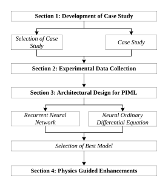

An overview and introduction of the report
Accurate modelling of chemical engineering processes is essential for reliable prediction and decision-making, yet traditional analytical models are often limited by incomplete process understanding, leading to oversimplified representations of complex dynamics. Machine learning (ML) offers an alternative by learning input-output relationships directly from data, potentially capturing unknown physical phenomena unrepresented by analytical models. However, ML is constrained by limited available data and lack of interpretability. Physics-Informed Machine Learning (PIML) addresses these challenges by embedding a priori physical knowledge, enabling more accurate and interpretable models from limited data. As such, this work presents a comparative study on modelling limited experimental data on dynamic CO₂ chemisorption in a lab-scale packed column through both architectural modifications and incorporation of governing equations. In particular, architectural variants of Recurrent Neural Networks (RNN) and Neural Ordinary Differential Equations (NODE) were explored. The best variant, NODE-ED-Uncoupled, was identified as the best-performing variant through 100 repeated K-fold cross-validation and bootstrap aggregating, achieving a mean R² of 0.689 ± 0.101 and MSE of 0.245 ± 0.036 for K-fold cross-validation. Governing equations was subsequently integrated as equation constraints, learnable kinetic parameters, and collocation-based supervision across the full operating space. Collocation-based supervision yields the best results of R² of 0.773 ± 0.0882 and MSE of 0.239 ± 0.070 for K-fold cross-validation.
Chemical engineering lies at the intersection of chemistry, physics and engineering to design, optimise and scale processes that transform raw materials into valuable products1. As global demand for these products intensifies, chemical manufacturers are compelled towards more efficient process routes and optimal operations control2. As such, accurate process modelling has become essential for reliable prediction and informed decision-making to enhance process performance.
Analytical models also referred to as First Principles Modelling (FPM) are conventionally utilised to help engineers understand and design chemical processes3. For example, Wang et al. (2023)4 employed FPMs, including linear spring dashpot formulations alongside mass, momentum, energy, and species balances, to simulate the hydrodynamics of coal-biomass co-gasification. This enabled prediction of system behaviour in response to variations in particle size due to velocity and temperature disturbances. Similarly, Bo et al. (2025)5 employed FPMs such as Newton's second law, Navier-Stokes equations, momentum and energy balances, to predict the heat transfer effects arising from wear mechanisms. Additionally, Kashid et al. (2007)6 applied Navier-Stokes and convection-diffusion equations to investigate the effects of operating conditions such as viscosity on circulation patterns and mass transfer in a liquid-liquid slug flow microreactor. Collectively, these studies demonstrate moderately strong agreement between FPM predictions and experimental observations.
While these studies demonstrate the effectiveness of FPMs, chemical engineering processes tend to be complex and such models are hence analytically intractable and computationally demanding7. Consequently, simplified representations are frequently adopted, leading to discrepancies between model predictions and actual system behaviour8. These deviations are further exacerbated by unknown variables, idealised assumptions and imposed boundary conditions. For instance, linking back to the aforementioned studies, Wang et al. (2023)4 reported a discrepancy of approximately 15% in outlet gas mole fraction predictions due to simplifications in bed configuration and chemical reaction modelling. Kashid et al. (2007)6 observed deviations of about 30% in titration time predictions at low velocities, largely attributed to the assumption of a flat interface affecting the velocity profile. Chhabra et al. (2001)9 reported average errors of 20-25% in predicting minimum fluidisation velocity, with deviations reaching up to 60% in the creeping flow regime in their review on non-Newtonian fluid flow. As such, these papers highlight the inherent limitations of FPM in accurately capturing certain process behaviours.
To address these challenges, Machine Learning (ML) has emerged as a promising alternative. It serves as a surrogate model capable of capturing complex, non-linear relationships that are difficult to describe analytically10. By learning directly from data, ML models can implicitly account for unknown or unmodelled physics11. For example, Serrano et al. (2020)12 applied Artificial Neural Networks (ANN) with Levenberg-Marquardt and Bayesian Regularisation algorithms to predict the gas composition and yield of biomass gasification when biomass properties and operating conditions varied. Similarly, Cu et al. (2025)13 explored ANN coupled with Particle Swarm Optimisation (ANN-PSO) to predict variations in heat transfer coefficients under changing operating conditions. Additionally, Dahlan et al. (2025)14 employed ANN in conjunction with response surface methodology and various training algorithms to model and optimise CO2 removal processes.
Despite these advantages, ML has not gained much traction in industrial chemical engineering applications. First, ML methods are inherently data-intensive8, yet obtaining high-quality experimental data in chemical engineering is often costly and time-consuming. Second, ML models are frequently criticised for their lack of interpretability, whereby they function as black boxes3, which reduces trust and hinder their direct application in process design. Third, the absence of explicit physical constraints may result in predictions that are not physically realisable15. For instance, linking back to the aforementioned studies, Serrano et al. (2020)12 reported poor predictions for H2 gas composition, with deviations of up to 90% from experimental data, likely due to the model's inability to distinguish measurement noise from underlying physical behaviour. Dahlan et al. (2025)14 reported that ANN was unable to quantify the individual influence of input variables, highlighting the limited interpretability of purely data-driven approaches.
With these identified strengths and weaknesses of both existing models, this gives rise to a new advancement, Physics Informed Machine Learning (PIML), which seeks to constrain the ML model to long-established physical laws. By unifying physics-based and data-driven approaches, PIML can potentially deliver accurate predictions that remain physically consistent while generalising beyond conventional assumptions and boundary conditions. Moreover, it is reported that PIML can reduce the amount of data required for training as demonstrated by Veliogulu et al. (2025)16 in their studies on a Van de Vusse continuous stirred tank reactor and a liquid-liquid extractor.
Despite their promising capabilities, PIML remains a relatively nascent field in chemical engineering. Recent studies have demonstrated its applicability across a few examples. For instance, the previously mentioned study by Veliogulu et al. (2025)16 investigated the generalisation, state estimation and extrapolation capabilities of stirred tank reactors and liquid-liquid extractors. Jalili et al. (2024)17 applied PIML to model the hydrodynamics and heat transfer of varying flow configurations on two-phase flow. Carranza-Abaid and P.Jakobsen (2022)18 incorporated FPM into structured ANN models to predict distillate and bottoms purity in flash and distillation columns. A couple of papers studied PIML application on reaction kinetics and polymer systems. Alizadeh et al. (2025)19 analysed kinetic modelling in heavy oil hydrocracking, Wu and Li (2024)20 studied a plate reactor system with a heating cylinder, while Ma et al. (2025)21 evaluated for food kinetics purposes. Additionally, Ghaderi et al. (2020)22 applied a feedforward Physics-Informed Neural Network to predict inelasticity in cross-linked polymers.
While these studies demonstrate the promise of PIML in chemical engineering applications, several limitations remain that constrain their broader adoption in this field. First, approximately 70% of reported results have been trained and validated primarily on simulated data. This suggests that the learning process only reflects known physical relationships rather than genuinely uncovering unknown physical phenomena. As such, the evaluations of current PIML may have inflated the perceived effectiveness of PIML relative to their performance on real systems. Second, even among studies that utilise experimental data, they provide limited comparative analysis, if any, between the PIML models explored. These papers often focus solely on the potential of PIML to fit the data rather than a rigorous evaluation into the reproducibility of their results via statistical significance testing. Third, the majority of existing studies focus on simple case studies that predominantly involve a single governing physical principle. For instance, many of the aforementioned works primarily examine the application of PIML to reaction kinetic modelling. In contrast, systems characterised by strong interdependencies between multiple coupled physical phenomena remain significantly underexplored, despite being representative of most real-world chemical engineering processes23. This is likely attributed to the limited physical understanding of the underlying system. Therefore, further research of PIML capabilities in this area is warranted, especially where conventional FPM approaches are inadequate.
Accordingly, the scope of this study is guided by the central research question:
To address this research question, the study is organised into four sections as shown in Figure 1.1.

To answer the research question, a rigorous selection of an appropriate case study is undertaken to anchor the discussion (Section 2). This is followed by the design of a data acquisition methodology to ensure that the collected dataset captures key manipulated and response variables that reflect realistic process variability (Section 3). An architectural evaluation is subsequently conducted on two key model classes: Recurrent Neural Networks (RNN) and Neural Ordinary Differential Equations (NODE). Variants of these architectures are explored and compared to identify the most suitable model architecture for subsequent development (Section 4). Finally, the selected architecture is extended to incorporate limited governing physical equations currently known, with varying levels of enforcement (Section 5).